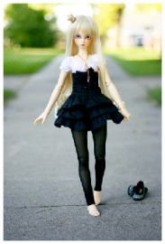
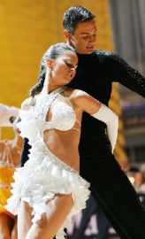

I don't drink coffee I take tea my dearI like my toast done on one sideAnd you can hear it in my accent when I talkI'm an Englishman in New York
Тебя искала я по белу светуИ там, и сям, и даже по ИнтернетуНашла в соседнем доме, ну просто приколИ ты со мною тоже счастье обрёл
Taking me higher than I've ever been beforeI'm holding it back, just want to shout out, give me more
I want you to breathe meLet me be your airLet me roam your body freelyNo inhibition, no fear
Be still my soulBe still my soulSoulBe still my soul
The city feels clean this time of night.
Just empty streets and me walking home to clear my head.
No it came this moon so bright.
[Sia]I was born in a thunderstormI grew up overnightI played aloneI'm playing on my ownI survivedHey

There's a reason you're everywhereBreathe you in like you're in the airMaybe you should call off the dayGive your girl some time to play
Ты идеальна, ты всегда это знала. Ты как богиня, ты как с обложки журнала. Ты появилась на пляже, с такими ногами.
[Verse 1: Anna Naklab]You can tell by the wayShe walks that she's my girlYou can tell by the wayShe talks, she rules the world
Её глаза такие синие,Глаза магнит, глаза магнит. На платье распустились лилии. И я убит. Любить обещает, потом забывает.
[Camila:]Give it to me, I'm worth itBaby I'm worth itUh huh I'm worth itGimme gimme I'm worth itGive it to me, I'm worth it
Hey, once upon a younger yearWhen all our shadows disappearedThe animals inside came out to playHey, when face to face with all our fears

Номер 23, твой заход -Значит, мне пора идти, и меня партнёрша ждёт.В спорте восемь лет, и ничего -Не было ещё побед. Это просто не моё.
Даже если, не ответишь. Лучше слов глаза мне говорят. Я отдам, всё на свете. За один твой мимолётный взгляд. С твоим фото, на футболке.
Думал я, на века, думал я, навсегда,Думал я, мы с тобой неразлучные.Тут вот как бы не так, тут вот всё, да не так,Ты любви предпочла безналичные.
If I had another chance tonight
I'd try to tell you that the things
we had were right
(repeated ad infinitum)Ooh, babyI feel like music sounds better with youLove might bring us back togetherI feel so good
Yeah
[Brian:]You are my fireThe one desireBelieve when I sayI want it that way
You can dance, you can jive, having the time of your lifeSee that girl, watch that scene, diggin' the Dancing Queen